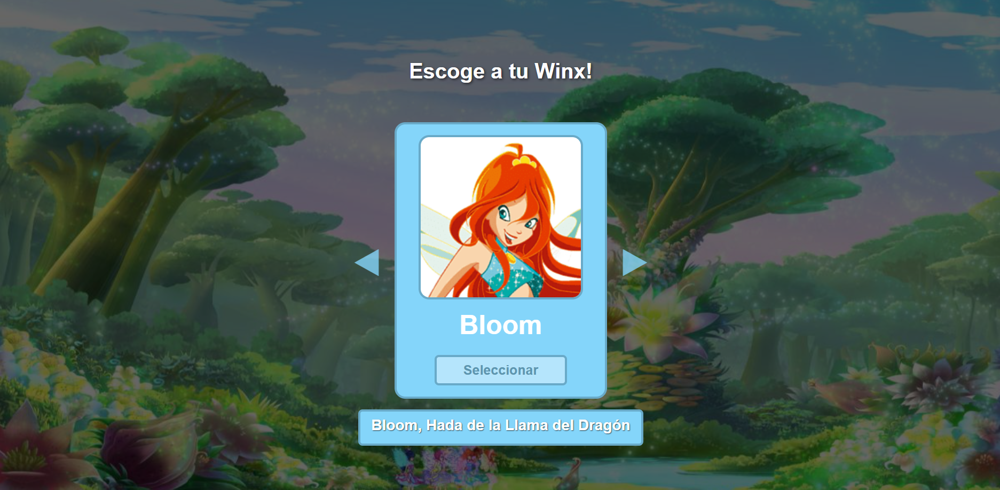
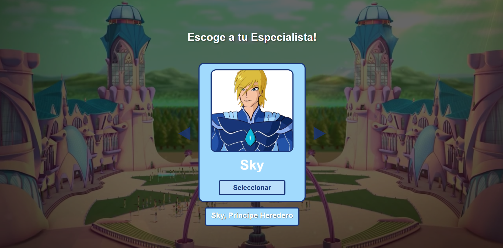
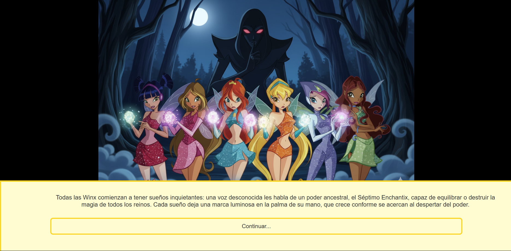
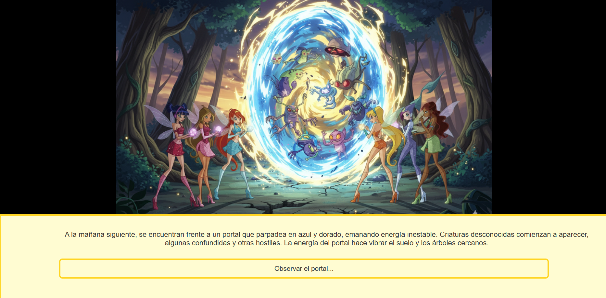
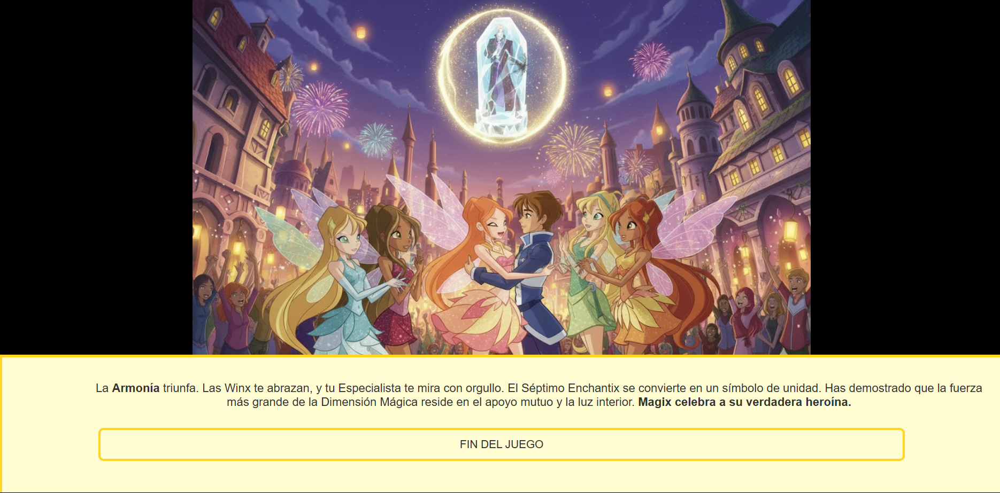
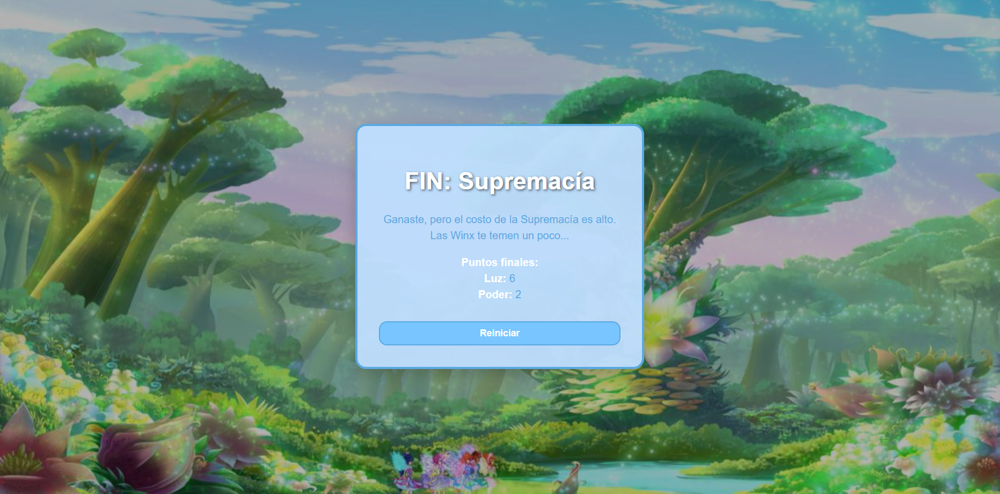

Winx es un juego narrativo interactivo donde cada decisión que toma el jugador
influye en el rumbo de la historia. A través de distintos caminos y finales, el
jugador experimenta un mundo lleno de fantasía, magia y consecuencias únicas
basadas en sus elecciones.